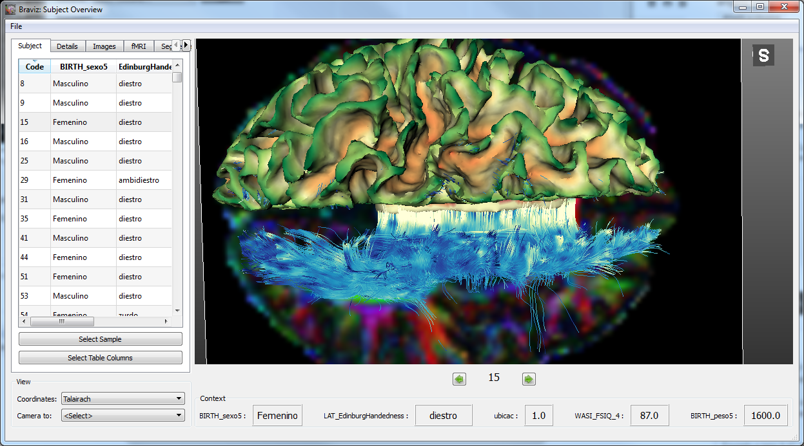
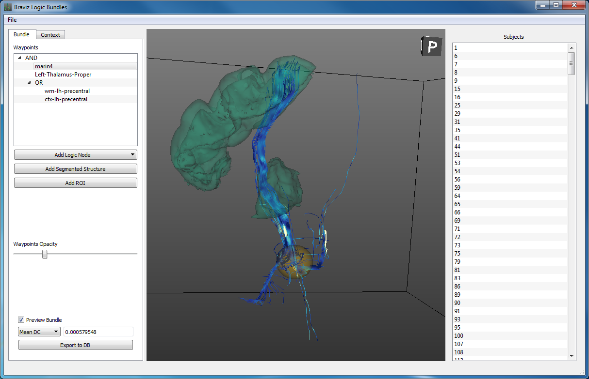
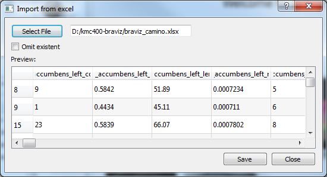

Braviz Applications¶
This page shows the catalog of braviz graphical applications. For more information about any of them look for the link at the bottom of each section.
Each application can be used independently, or they can be used at the same time for larger analysis. When launched from the same menu applications are linked together and it yo can for example make them all change to a certain subject. This allows you to have several points of view to the data at all times.
Visualizing Neuro-Image data¶
These applications provide access to neuro-image data.
Subject Overview¶
Display images, bundles, surfaces and segmentation results for each subject at a time.
See Subject Overview
Defining geometric objects¶

Logic bundles¶
Define bundles using segmented structures, rois and logical operations.
See Logic Bundles
Statistical visualization¶
Visualize variables stored in the database.

Managing data¶
Import and export variables from the database
Import excel tables¶
Add variables to the database from excel spreadsheets.
See Import variables

{kind=link}
{kind=link}
{kind=link}
{kind=link}
{kind=link}
{kind=link}
{kind=link}
{kind=link}
{kind=link}
{kind=link}
{kind=link}